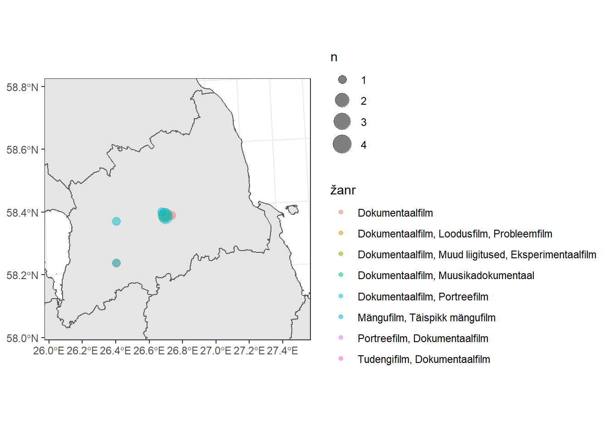

Praktikum 21 Ruumiandmete analüüs R-iga (2)
Eelmisel korral vaatasime, kuidas R-iga lihtsamaid kaarte teha. See hõlmas
- vajalike pakettide laadimist,
library(tidyverse)
library(sf)
library(ggspatial)- andmete sisselugemist,
kihelkonnad <- st_read("data/kihelkonnad/kihelkonnad.shp")- andmete filtreerimist,
kihelkonnad %>%
filter(Dialect_et == "Saarte")või
kihelkonnad %>% filter(Dialect_et == "Saarte") -> saarte_murrevõi
saarte_murre <- kihelkonnad %>% filter(Dialect_et == "Saarte")- andmete visualiseerimist.
ggplot() +
geom_sf(data = kihelkonnad)Sel korral kasutame Eesti filmide andmestikku, teeme paar staatilist kaarti ning vaatame ka, kuidas teha R-is lihtsat rakendust, mis kuvaks andmestiku alamosast kaarti vastavalt kasutaja valikutele. Siin tuleb osata pisut R-i (või juhendeid lugeda), aga mitte näiteks JavaScripti ega HTMLi.
21.1 Staatilised kaardid
Loeme alustuseks sisse terve efis.ee lehelt korjatud kohamärksõnadega tabeli failist efis_kohad.csv, kus on kõikide kohtadega seotud filmid, nende ilmumisaasta ning žanr. Seejärel loeme sisse ka geokodeeritud alamosa suurest tabelist, mida kasutasime 19. praktikumis (efis_eesti.gpkg). Seal olid ainult need Eesti kohanimed, mida esines terves andmestikus kõikide aastate peale vähemalt 5 korda. Samuti loeme sisse maakondade kihi, mida saame kasutada aluskaardina (maakond_20221101.shp) või millel kuvada maakonniti filmide arvu.
# laadime paketid
library(tidyverse)
library(sf)# loeme sisse andmed
efis_suur <- read.delim("data/efis_kohad.csv", sep = "\t", encoding = "UTF-8")
efis_eesti <- st_read("data/efis_eesti.gpkg")
maakonnad <- st_read("data/maakond_shp/maakond_20221101.shp")Ühendame kaks EFISe andmestikku nii, et meil ei oleks kaardil võimalik näidata enam mitte ainult üldist infot selle kohta, kui palju filmides teatud aastatel mingeid kohti esines, vaid saaksime kaardil kuvada andmebaasi alamosi ka nt žanri järgi.
# vaatame EFISe andmestike esimesi ridu
head(efis_eesti)## Simple feature collection with 6 features and 3 fields
## Geometry type: POINT
## Dimension: XY
## Bounding box: xmin: 412572.1 ymin: 6447768 xmax: 609980.4 ymax: 6509234
## Projected CRS: Estonian Coordinate System of 1997
## koht n aasta1 geom
## 1 Abruka saar 1 1931 POINT (412572.1 6447768)
## 2 Abruka saar 1 1963 POINT (412572.1 6447768)
## 3 Abruka saar 1 1972 POINT (412572.1 6447768)
## 4 Abruka saar 1 1978 POINT (412572.1 6447768)
## 5 Abruka saar 1 2009 POINT (412572.1 6447768)
## 6 Adavere, Jõgevamaa 1 1965 POINT (609980.4 6509235)head(efis_suur)## koht pealkiri
## 1 A. Laikmaa tänav (Tallinn) Must Peeter
## 2 A. Laikmaa tänav (Tallinn) Tallinna trammid ja trollid
## 3 Aa (Ida-Virumaa) Tootmiskoondise Eesti Põlevkivi pioneerilaagris
## 4 Aachen (Saksamaa) Ära mind lahti lase
## 5 Aafrika Jeesus juhatab Sind kiirteele
## 6 Aafrika Oma silm on kuningas
## aasta žanr
## 1 2008 Mängufilm, Lühimängufilm
## 2 1965 Filmikroonika, Kroonikafilmid 1940 II pool-1991
## 3 1977 Filmikroonika, Kroonikafilmid 1940 II pool-1991
## 4 2019 Dokumentaalfilm
## 5 2019 Mängufilm, Täispikk mängufilm
## 6 2018 Dokumentaalfilm, Olukirjeldusfilm, Film filmi tegemisestKasutame ühendamiseks mõlema andmestiku ühist tulpa koht.
Kõigepealt aga tuleb andmestikus efis_suur viia kohanimed kujult Adavere (Jõgevamaa) kujule Adavere, Jõgevamaa, nagu need on geokodeeritud andmestikus.
efis_suur %>%
mutate(koht = gsub("^(.*) \\((.*)\\)", "\\1, \\2", koht) %>% trimws()) -> efis_suur
# Käsku võib lugeda nii, et tee tabelisse "efis_suur" vana tulba "koht" asemele
# uus tulp "koht" nii, et olemasolevas tulbas võta kirje algusest '^'
# kuni sulu ees oleva tühikuni ' \\('
# kõik, mis seal on '(.*)' (. <- "ükskõik mis sümbol", * <- "ükskõik kui mitu korda"),
# seejärel võta pärast tühikut sulgude seest ükskõik, mis seal on '\\((.*)\\)'
# ja kleebi need kaks kokku nii, et esimest ja teist osa eraldaks koma ja tühik '\\1, \\2'.
# Lõpuks kustuta kirjete eest ja tagant ka võimalikud ebavajalikud tühikud 'trimws()'.
# Kirjuta andmestik efis_suur üle nii, et tulp "koht" on seal nüüd mitte sulgude, vaid komaga.Kuna tahame efis_eesti ruumiandmete kihilt kasutada ainult kohtade nimesid ja koordinaate, salvestame selle osa andmestikust eraldi objekti.
efis_eesti_kohad <- efis_eesti %>%
select(koht) %>% # vali tulp "koht"
distinct() # jäta iga unikaalne kirje alles ainult 1 korra
head(efis_eesti_kohad)## Simple feature collection with 6 features and 1 field
## Geometry type: POINT
## Dimension: XY
## Bounding box: xmin: 412572.1 ymin: 6447768 xmax: 695429 ymax: 6580406
## Projected CRS: Estonian Coordinate System of 1997
## koht geom
## 1 Abruka saar POINT (412572.1 6447768)
## 2 Adavere, Jõgevamaa POINT (609980.4 6509235)
## 3 Aegviidu, Harjumaa POINT (592497.8 6573457)
## 4 Ahja, Põlvamaa POINT (680762.2 6456218)
## 5 Ahtme, Ida-Virumaa POINT (695429 6580406)
## 6 Alatskivi, Tartumaa POINT (682119.8 6499849)Saame andmestiku, kus on 373 unikaalset kohanime koos koordinaatidega.
Ühendame nüüd ruumiandmed (efis_eesti_kohad) ja mitteruumiandmed (efis_suur) funktsiooniga left_join(). Kuna mõlemas tabelis on olemas ühesugused tulbanimed (koht), ühendatakse automaatselt nende tulpade põhjal ja funktsioonis ei pea ühendamiseks kasutatavaid tulbanimesid täpsustama.
efis_suur_koord <- left_join(efis_eesti_kohad, efis_suur)Vaatame, mis juhtus.
# Andmetabeli esimesed read
head(efis_suur_koord)## Simple feature collection with 6 features and 4 fields
## Geometry type: POINT
## Dimension: XY
## Bounding box: xmin: 412572.1 ymin: 6447768 xmax: 609980.4 ymax: 6509234
## Projected CRS: Estonian Coordinate System of 1997
## koht pealkiri aasta
## 1 Abruka saar Armastusega Abrukale ja tagasi 2009
## 2 Abruka saar Saare kalurid 1978
## 3 Abruka saar Kivid ja kadakad 1972
## 4 Abruka saar Moldaavia NSV kunstinädal Eesti NSV-s 1963
## 5 Abruka saar Kas tunned maad... 1931
## 6 Adavere, Jõgevamaa Sensatsiooniline Tartu Kevadbänd 2004
## žanr geom
## 1 Amatöörfilm POINT (412572.1 6447768)
## 2 Filmikroonika, Kroonikafilmid 1940 II pool-1991 POINT (412572.1 6447768)
## 3 Dokumentaalfilm, Olukirjeldusfilm POINT (412572.1 6447768)
## 4 Filmikroonika, Kroonikafilmid 1940 II pool-1991 POINT (412572.1 6447768)
## 5 Dokumentaalfilm POINT (412572.1 6447768)
## 6 Dokumentaalfilm, Olukirjeldusfilm POINT (609980.4 6509235)Iga suure tabeli kirje, mis leidus ka geokodeeritud andmestikus, sai nüüd juurde ka koordinaadid. Need kirjed, mida geokodeeritud andmestikus ei olnud (u 5000 filmi), jäid ühendamisel loodud andmestikust välja.
# Millised erinevad žanrikirjed tabelis on?
efis_suur_koord %>%
distinct(žanr) # jäta iga unikaalne kirje alles ainult 1 korra## žanr
## 1 Amatöörfilm
## 2 Filmikroonika, Kroonikafilmid 1940 II pool-1991
## 3 Dokumentaalfilm, Olukirjeldusfilm
## 4 Dokumentaalfilm
## 5 Filmikroonika, Kroonikafilmid alates 1992
## 6 Amatöörfilm, Kroonika
## 7 Dokumentaalfilm, Portreefilm
## 8 Dokumentaalfilm, Loodusfilm
## 9 Muusikafilm
## 10 Populaarteaduslik film
## 11 Dokumentaalfilm, Muud liigitused, Eksperimentaalfilm
## 12 Populaarteaduslik film, Õppefilm, Tellimusfilm, Muud liigitused
## 13 Dokumentaalfilm, Loodusfilm, Probleemfilm, Populaarteaduslik film, Muud liigitused, Tellimusfilm
## 14 Mängufilm, Täispikk mängufilm
## 15 Dokumentaalfilm, Vaatefilm
## 16 Filmikroonika, Kroonikafilmid 1912-1940 I pool
## 17 Kroonikafilmid 1912-1940 I pool, Filmikroonika
## 18 Populaarteaduslik film, Õppefilm
## 19 Muusikafilm, Kontsertfilm
## 20 Tellimusfilm, Muud liigitused
## 21 Dokumentaalfilm, Probleemfilm, Vaatefilm
## 22 Dokumentaalfilm, Muusikadokumentaal
## 23 Dokumentaalfilm, Probleemfilm
## 24 Dokumentaalfilm, Tellimusfilm, Muud liigitused
## 25 Tudengifilm, Harjutusfilm (dokumentaalne)
## 26 Tudengifilm, Dokumentaalfilm
## 27 Dokumentaalfilm, Portreefilm, Muusikadokumentaal
## 28 Muud liigitused, Võttematerjal
## 29 Mängufilm, Lühimängufilm
## 30 Vaatefilm, Dokumentaalfilm
## 31 Õppefilm, Muud liigitused, Tellimusfilm, Populaarteaduslik film
## 32 Dokumentaalfilm, Olukirjeldusfilm, Muud liigitused, Tellimusfilm
## 33 Portreefilm, Muusikadokumentaal, Dokumentaalfilm
## 34 Portreefilm, Dokumentaalfilm
## 35 Kroonikafilmid 1940 II pool-1991, Filmikroonika
## 36 Kontsertfilm, Muusikafilm
## 37 Amatöörfilm, Dokumentaalfilm
## 38 Dokumentaalfilm, Muud liigitused, Tellimusfilm
## 39 Dokumentaalfilm, Antropoloogiafilm
## 40 Dokumentaalfilm, Vaatefilm, Muud liigitused, Eksperimentaalfilm
## 41 Tudengifilm, Lühimängufilm
## 42 Dokumentaalfilm, Loodusfilm, Probleemfilm
## 43 Dokumentaalfilm, Portreefilm, Probleemfilm
## 44 Reklaamfilm, Promofilm
## 45 Populaarteaduslik film, Õppefilm, Muud liigitused, Tellimusfilm
## 46 Dokumentaalfilm, Portreefilm, Tudengifilm
## 47 Tudengifilm, Harjutusfilm (lavastuslik)
## 48 Mängufilm, Lühimängufilm, Muud liigitused
## 49 Dokumentaalfilm, Tudengifilm
## 50 Amatöörfilm, Mängufilm
## 51 Telemängufilm, Täispikk telemängufilm
## 52 Portreefilm, Tellimusfilm, Muud liigitused, Dokumentaalfilm
## 53 Täispikk mängufilm, Mängufilm
## 54 Dokumentaalfilm, Olukirjeldusfilm, Antropoloogiafilm
## 55 Dokumentaalfilm, Probleemfilm, Muud liigitused, Tellimusfilm
## 56 Mängufilm, Amatöörfilm
## 57 Populaarteaduslik film, Tellimusfilm, Muud liigitused
## 58 Olukirjeldusfilm, Dokumentaalfilm
## 59 Mängufilm, Lühimängufilm, Dokumentaalfilm, Portreefilm, Muud liigitused, Eksperimentaalfilm
## 60 Muud liigitused, Tellimusfilm, Dokumentaalfilm
## 61 Populaarteaduslik film, Muud liigitused, Tellimusfilm
## 62 Filmikroonika, Kroonikafilmid 1940 II pool-1991, Muud liigitused, Võttematerjal
## 63 Probleemfilm, Dokumentaalfilm
## 64 Muusikafilm, Tantsufilm
## 65 Animafilm, Joonisfilm
## 66 Dokumentaalfilm, Portreefilm, Tellimusfilm, Muud liigitused
## 67 Dokumentaalfilm, Muud liigitused
## 68 Muusikadokumentaal, Dokumentaalfilm
## 69 Tellimusfilm, Muud liigitused, Populaarteaduslik film
## 70 Dokumentaalfilm, Loodusfilm, Vaatefilm
## 71 Animafilm, Nukufilm
## 72 Dokumentaalfilm, Portreefilm, Animafilm, Nukufilm
## 73 Tellimusfilm, Dokumentaalfilm, Probleemfilm, Muud liigitused
## 74 Muud liigitused, Populaarteaduslik film, Õppefilm, Tellimusfilm
## 75 Muud liigitused
## 76 Tudengifilm, Lühimängufilm, Reklaam/Promofilm
## 77 Muud liigitused, Tellimusfilm
## 78 Muusikafilm, Kontsertfilm, Telemängufilm
## 79 Mängufilm
## 80 Lühimängufilm, Muud liigitused, Tellimusfilm, Mängufilm
## 81 Kroonikafilmid alates 1992, Filmikroonika
## 82 Tellimusfilm, Muud liigitused, Dokumentaalfilm
## 83 Nukufilm, Animafilm
## 84 Loodusfilm, Dokumentaalfilm
## 85 2014 | Režissöör: Tõnu Virve
## 86 Dokumentaalfilm, Probleemfilm, Tudengifilm
## 87 Võttematerjal, Filmikroonika, Kroonikafilmid 1940 II pool-1991, Muud liigitused
## 88 Populaarteaduslik film, Dokumentaalfilm
## 89 Dokumentaalfilm, Muusikafilm
## 90 Dokumentaalfilm, Olukirjeldusfilm, Tudengifilm
## 91 Mängufilm, Lühimängufilm, Muud liigitused, Tellimusfilm
## 92 Dokumentaalfilm, Populaarteaduslik film
## 93 Tellimusfilm, Dokumentaalfilm, Olukirjeldusfilm, Muud liigitused
## 94 Muusikafilm, Tantsufilm, Tudengifilm, Lühimängufilm
## 95 Lühimängufilm, Tudengifilm
## 96 Tudengifilm, Tehtud välisülikoolis
## 97 Dokumentaalfilm, Loodusfilm, Antropoloogiafilm# Mis on kõige sagedamad?
efis_suur_koord %>%
count(žanr) %>% # loe kokku iga žanri esinemissagedus
arrange(desc(n)) # järjesta tabel kahanevalt tulba "n" väärtuste järgi## Simple feature collection with 97 features and 2 fields
## Geometry type: GEOMETRY
## Dimension: XY
## Bounding box: xmin: 373567.5 ymin: 6388927 xmax: 738476.1 ymax: 6612672
## Projected CRS: Estonian Coordinate System of 1997
## First 10 features:
## žanr n
## 1 Filmikroonika, Kroonikafilmid 1940 II pool-1991 881
## 2 Dokumentaalfilm 670
## 3 Dokumentaalfilm, Portreefilm 338
## 4 Mängufilm, Täispikk mängufilm 131
## 5 Dokumentaalfilm, Probleemfilm 111
## 6 Dokumentaalfilm, Olukirjeldusfilm 110
## 7 Dokumentaalfilm, Vaatefilm 88
## 8 Amatöörfilm, Kroonika 77
## 9 Kroonikafilmid 1912-1940 I pool, Filmikroonika 73
## 10 Kroonikafilmid 1940 II pool-1991, Filmikroonika 61
## geom
## 1 MULTIPOINT ((385808.3 64269...
## 2 MULTIPOINT ((373567.5 64731...
## 3 MULTIPOINT ((373567.5 64731...
## 4 MULTIPOINT ((385566.8 64710...
## 5 MULTIPOINT ((385808.3 64269...
## 6 MULTIPOINT ((373567.5 64731...
## 7 MULTIPOINT ((373567.5 64731...
## 8 MULTIPOINT ((397445.8 65317...
## 9 MULTIPOINT ((385566.8 64710...
## 10 MULTIPOINT ((507342.5 64526...Teeme kaardi.
# Punktide kaart (ilma aluskaardita)
ggplot(efis_suur_koord) +
geom_sf()
# Kui tahame näidata koordinaate mitte geograafilistes kraadides,
# vaid projektsiooni ühikutes, võime lisada plussiga lõppu veel kihi
# coord_sf(datum = st_crs(efis_suur_koord))Valime nüüd näiteks ainult need andmestiku punktid, mis käivad selliste kohtade kohta, mida näidati 2021. aasta dokumentaal- ja mängufilmides. Loeme kokku, mitu korda iga koha puhul erinevaid žanre esines, ja salvestame tulemuse uude muutujasse efis_2021_mngdok. Lisame punktidele alla ka maakondade aluskaardi.
# aasta on 2021
# žanri tulp sisaldab järjendit "dokumentaal", "Dokumentaal", "mängufilm" või "Mängufilm"
efis_suur_koord %>%
filter(aasta == 2021,
grepl("[dD]okumentaal|[mM]ängufilm", žanr)) %>%
count(koht, žanr) -> efis_2021_mngdok
ggplot() +
geom_sf(data = maakonnad) + # maakondade aluskaardi kiht
geom_sf(data = efis_2021_mngdok,
aes(size = n, color = žanr), # suurus esinemise arvu ja värv žanri järgi
alpha = 0.5) + # teeme punktid läbipaistvamaks
scale_size_continuous(range = c(3, 7)) + # ja suuremaks
theme_bw() # lisame mustvalge teema
See ei ole kõige mugavam viis neid andmeid vaadata. Võime proovida mingile kindlale alale sisse suumida.
ggplot() +
geom_sf(data = maakonnad) +
geom_sf(data = efis_2021_mngdok,
aes(size = n, color = žanr),
alpha = 0.5) +
scale_size_continuous(range = c(3, 7)) +
theme_bw() +
coord_sf(xlim = st_bbox(maakonnad %>%
filter(MNIMI == "Tartu maakond"))[c("xmin", "xmax")],
ylim = st_bbox(maakonnad %>%
filter(MNIMI == "Tartu maakond"))[c("ymin", "ymax")])
Võime proovida punkte ka näiteks žanride kaupa eraldi paneelidel kuvada. Kuna aga ühel filmil võib olla mitu kategooriat, tuleks meil filmid esmalt binaarselt klassifitseerida: kui žanri märksõnade hulgas on (muu hulgas) ka sõna Dokumentaal või dokumentaal, klassifitseerime selle dokumentaalfilmiks; kui žanri märksõnade hulgas on (muu hulgas) ka sõna Mängufilm või mängufilm, klassifitseerime selle mängufilmiks. Kasutame selleks juba QGISist tuttavat kui - siis ehk ifelse funktsiooni (QGISis lihtsalt if()).
efis_suur_koord %>%
filter(aasta == 2021,
grepl("[dD]okumentaal|[mM]ängufilm", žanr)) %>%
count(koht, žanr) %>%
mutate(žanr_bin = ifelse(grepl("[dD]okumentaal", žanr), "dokumentaal", "mängufilm")) -> efis_2021_mngdok_bin
ggplot() +
geom_sf(data = maakonnad) +
geom_sf(data = efis_2021_mngdok_bin,
aes(size = n, color = žanr_bin),
alpha = 0.5) +
scale_size_continuous(range = c(3, 7)) +
theme_bw() +
facet_wrap("žanr_bin") # jagame andmed žanri tulba järgi eri paneelidele
Loeme kokku, mitu punkti igasse maakonda jääb, ja värvime maakonnad vastavalt punktide arvule. Lugemata jäävad praegu punktid, mille koordinaadid ei jää maismaa peale. Esmalt peame mõlema andmekihi CRSi täpselt ühesuguseks muutma (st_transform()).
# muudame efis_suur_koord CRSi täpselt samaks, mis on kihil maakonnad
efis_suur_koord <- st_transform(efis_suur_koord, crs = st_crs(maakonnad))
# leiame, palju efis_suur_koord punkte iga maakonna piiridesse jääb
maakonnad %>%
mutate(punkte = lengths(st_intersects(maakonnad, efis_suur_koord))) -> maakonnad
ggplot() +
geom_sf(data = maakonnad, aes(fill = punkte)) +
scale_fill_viridis_c(trans = "log") + # suurendame erinevusi väiksemate väärtuste vahel
theme_bw()
Võime lõpetuseks lisada maakondade polügoonidele ka sildid, mis ütlevad täpselt, kui mitu punkti sellesse maakonda jääb.
ggplot() +
geom_sf(data = maakonnad, aes(fill = punkte)) +
geom_sf_label(data = maakonnad, aes(label = punkte), alpha = 0.5) +
scale_fill_viridis_c(trans = "log") +
theme_bw()
Salvestame faili efis_suur_koord kihi faili funktsiooniga st_write.
st_write(efis_suur_koord, "data/efis_suur_koord.gpkg", crs = 3301)21.2 Shiny rakendus
R-is saab interaktiivsete rakenduste tegemiseks kasutada Shiny paketti. Kui sinu RStudios ei ole veel Shiny võimalust, tuleb pakett esmalt installida.
# Trüki konsooli
if(!"shiny" %in% rownames(installed.packages())) install.packages("shiny")
# Käsus kontrollitakse, kas shiny pakett sisaldub
# installitud pakettide nimede hulgas
# ning kui ei sisaldu (hüüumärki kasutatakse mingi tingimuse eitamiseks),
# siis installitakse.Seejärel valime File → New File → Shiny Web App, anname oma rakendusele nime (nt efis_shiny vmt) ning jätame rakenduse tüübi (Application type) valikuks Single File. See tähendab, et nii kasutajaliides (ui - user interface e see osa, mida kasutaja näeb ja mille abil rakendusega suhtleb) kui ka serveri loogika (server - see osa, mis vastavalt kasutaja valikutele tegelikult andmetega midagi teeb) on ühes R-i failis koos ning selle faili nimi on app.R.
Multiple File tähendaks, et ühes failis on kasutajaliidese osa ning teises serveri osa ning kui tahta rakendust kasutada, peavad olemas olema mõlemad failid.
Kasutuses kahel variandil praktiliselt vahet ei ole.
Valime ka kausta, milles tahame oma rakendust hoida. Selle kausta sisse tekib omakorda kaust rakenduse nimega (nt efis_shiny), mille sees on fail app.R ja mille sisse võiksid minna ka kõik rakenduses kasutatavad failid (nt tabelandmestikud, ruumiandete failid, pildid jm).
Avaneb fail app.R, kus on juba valmis põhi, mille sisse saab oma rakendust kirjutada. Vaikimisi põhi on tehtud histogrammi joonistamiseks. Vajutame rohelise noolekesega nupul Run App. Võib valida ka Run in Viewer Pane, et kuvada rakendust RStudio enda keskkonnas.
Kui tahta nüüd näha rakenduse endaga paralleelselt koodi, millega rakendus on tehtud, võib trükkida konsooli runExample("01_hello", display.mode = "showcase").
Rakenduse minimaalne nõutud struktuur koosneb neljast-viiest osast ning näeb välja selline (trellidega on tähistatud kommentaarid):
# 1. Rakenduse töötamiseks vajaliku shiny paketi laadimine.
# Siin saab sisse lugeda ka teised paketid,
# vajalikud andmed ning neid andmeid vajadusel töödelda.
library(shiny)
# 2. Vahepeal võib veel andmeid töödelda.
# 3. Kasutajaliides
ui <- fluidPage(
# Siin saab defineerida, kuidas kasutajaliides välja näeb, sh
# kus ja kuidas lasta kasutajal teha mingeid valikuid,
# milliseid valikuid kasutaja teha saab
# (nt filtreerida algandmetest mingeid andmeid,
# muuta mingitel väljundi elementidel värvi,
# kujundeid, teksti suurust, väljundit salvestada jne),
# milline on kasutaja valikute põhjal genereeritud väljund
# (nt kaart, tabel, joonis, tekst jne)
# ja kus see paikneb.
# fluidPage() teeb lehe, mis kohandub kasutaja brauseriakna suurusega,
# fixedPage() teeb lehe, mis on vaikimisi 940 piksli laiune.
)
# 4. Serveri loogika
server <- function(input, output){
# Siin saab defineerida, mida rakendus kasutaja valikute põhjal teeb
# ning kuidas soovitud väljundini jõuda,
# nt kui kasutaja valib A, siis tehakse väljund niisugustest andmetest,
# kui kasutaja valib B, siis tehakse väljund naasugustest andmetest jne,
# väljund ise on kaart.
}
# 5. Rakenduse kokkupanemine
shinyApp(ui = ui, server = server)Vaatame nüüd rakenduse struktuuri lähemalt ning teeme ise ühe lihtsa rakenduse, mis
- võtaks sisendiks failid maakond_20221101.shp (polügoonid) ja efis_suur_koord.gpkg (punktid),
- laseks kasutajal valida, mis aastatest ja mis žanrist filmide kohti näidata ning kas näidata neid punktikaardil või horopleetkaardil. Lisaks näitab rakendus ka kasutaja tehtud valikuid ning valitud alamandmestikku tabeli kujul.
Võib kasutada vaikimisi avatud rakenduse malli, ent sel juhul peab ära kustutama kommentaarid ning ui- ja server-funktsioonide sisu.
library(shiny)
ui <- fluidPage()
server <- function(input, output){}
shinyApp(ui = ui, server = server)Asetame rakenduse kausta (kus on fail app.R) ka vajalikud failid (maakond_shp/maakond_20221101.shp ja efis_suur_koord.gpkg).
21.2.1 Pakettide laadimine ja andmete sisselugemine
Kõigepealt võiks faili päisesse lisada kommentaarid (kõik #-märkidega read on kommentaarid) selle kohta, mida rakendus teeb, milliseid faile ja pakette kasutab ning kes ja millal on rakenduse teinud. Kommentaarid rakenduses kuskil näha ei jää ega ole rakenduse töötamise seisukohast olulised.
# See rakendus kuvab veebikaardi Eesti filmidega seotud kohtadest erinevatel aastatel.
# Lisaks näidatakse konkreetse ajavahemiku ja žanriga seotud filmide andmeid tabelis.
#
# Rakenduse sisendfailideks on
# maakond_20221101.shp ja efis_suur_koord.gpkg.
#
# Rakendus kasutab pakette shiny, sf ja tidyverse (sh ggplot2 ja dplyr).
#
# Maarja-Liisa Pilvik
# 28.11.2022Järgmiseks laadime rakenduse töötamiseks vajalikud paketid. Kuna vaikimisi avaneval rakendusel pole aimugi, mida rakendusega päriselt tegema hakatakse, on tema ainukeseks nõudeks see, et shiny pakett oleks installitud ja laaditud.
Meie laadime lisaks shiny-paketile ka paketid sf ja tidyverse.
#-------------------------------------------------#
#---1. Laadime paketid ja loeme sisse andmed---####
#-------------------------------------------------#
# Paketid
library(shiny) # vajalik rakenduse töötamiseks
library(sf) # vajalik ruumiandmete sisselugemiseks ja analüüsiks
library(tidyverse) # sisaldab paketti ggplot2 (visualiseerimiseks) ning
# dplyr ja tidyr (andmetöötluseks)Loeme sisse ka rakenduses kasutatavad andmed ning töötleme neid selleks, et saada sobivam failistruktuur.
# Andmed
maakonnad <- st_read("maakond_shp/maakond_20221101.shp")
efis <- st_read("efis_suur_koord.gpkg")21.2.2 Andmete eeltöötlemine
#-------------------------------#
#---2. Eeltöötleme andmeid---####
#-------------------------------#
# Eraldame kõik võimalikud kategooriad, mille järgi otsida
efis$žanr %>% # võtame tabelist ainult žanri tulba
strsplit(",") %>% # lõikame kategooriad koma koha pealt tükkideks
unlist() %>% # teeme saadud listist vektori (= tavalise loendi)
trimws() %>% # kustutame kategooriate eest ja tagant ära üleliigsed tühikud
tolower() %>% # teeme kõik kategooriad väiketähelisteks
gsub("\\(", "-", .) %>% # asendame alustava sulu sidekriipsuga
gsub("\\)", "-", .) %>% # asendame lõpetava sulu sidekriipsuga
unique() %>% # jätame iga kategooria kohta alles ainult ühe unikaalse kirje
sort() %>% # järjestame kategooriad tähestiku järjekorras kasvavalt
.[-1] -> kategooriad # eemaldame esimese sodikategooria ja salvestame loetelu muutujasse "kategooriad"
# Ühendame dokumentaalfilmid, mängufilmid, kroonikad
kategooriad[grepl("dokumentaal", kategooriad)] <- "dokumentaal"
kategooriad[grepl("mängufilm", kategooriad)] <- "mängufilm"
kategooriad[grepl("kroonika", kategooriad)] <- "kroonika"
kategooriad %>% unique() -> kategooriad # jätame alles jälle anult unikaalsed kirjed
# Teeme ka filmide andmestikus žanrid väiketäheliseks ja asendame sulud
efis %>% mutate(žanr = tolower(žanr) %>% gsub("\\(", "-", .) %>% gsub("\\)", "-", .)) -> efis
# Võtame aastast ainult 4 esimest numbrit ja teeme selle arvuliseks tunnuseks
efis %>%
mutate(aasta = substr(aasta, 1, 4) %>% as.numeric()) -> efis
# Määrame efise kihile täpselt sama CRSi, mis maakondadel
efis <- st_transform(efis, crs = st_crs(maakonnad))21.2.3 Kasutajaliides
Edasi tuleb kasutajaliidese (ui) osa, mis määrab ära selle, kuidas kasutaja rakendust näeb. Kasutajaliides moodustub hierarhilistest funktsioonidest (funktsioonid tähistatud sulgudega, mille sees täpsustatakse funktsioonide argumente).
Meie teeme lihtsa kasutajaliidese, kus on
- rakenduse pealkiri (
titlePanel);
- menüü, kus saab valida
- rippmenüüs (
selectInput) žanri, mille filmide kohti kaardil kuvada;
- liuguril (
sliderInput) aastate vahemiku, millest filmide kohti kaardil kuvada;
- valikunuppudega (
radioButtons) selle, kas kuvada punktikaarti või horopleetkaarti;
- rippmenüüs (
- väljundi ala, kus kuvatakse kasutaja valikuid (
verbatimTextOutput);
- väljundi ala, kus näidatakse kasutaja valikutest sõltuvalt kaarti (
plotOutput);
- väljundi ala, kus näidatakse kasutaja valikutest sõltuvalt andmetabelit (
dataTableOutput).
#---------------------------------------------#
#---3. Ehitame rakenduse kasutajaliidese---####
#---------------------------------------------#
ui <- fluidPage( # teeme brauseri akna suurusega sobituva lehekülje, kus on...
titlePanel("Eesti filmide kohad"), # rakenduse pealkiri
fluidRow( # rida, kus on kõik kasutaja sisendid:
column(4, # kolmandikul kogu akna laiusest
selectInput( # valiku rippmenüü
inputId = "genre", # millele viitame edaspidi nimega "genre"
label = "Vali žanr:", # mille juures on juhis "Vali žanr:"
choices = c("", kategooriad), # rippmenüüs on tühi valik + kategooriate loend
selected = "", # vaikimisi on valitud tühi valik
multiple = FALSE) # mitut kategooriat korraga ei saa valida
),
column(4, # teisel kolmandikul kogu akna laiusest on
sliderInput( # liugur
inputId = "year", # millele viitame edaspidi nimega "year"
label = "Vali aasta(d):", # mille juures on juhis "Vali aasta(d):"
min = min(efis$aasta), # mille vähim valitav väärtus on varaseim aasta
max = max(efis$aasta), # mille suurim valitav väärtus on hiliseim aasta
value = c(min(efis$aasta), # vaikimisi on valitud kogu liuguri ulatus
max(efis$aasta)), # (siin 1921-2021)
sep = "") # ära näita aastaarvudes tuhandete eraldajaid (nt 1,921)
),
column(4, # viimasel kolmandikul kogu akna laiusest on
radioButtons( # valikunupud
inputId = "type", # millele viitame edaspidi nimega "type"
label = "Vali kaarditüüp:", # mille juures on juhis "Vali kaarditüüp:"
choices = c("punktid", "horopleetkaart"), # võimalikud valikud
selected = "punktid") # vaikimisi on valitud punktikaart
)
),
hr(), # horisontaalne eraldusjoon, mille all on...
verbatimTextOutput("valik"), # väljund, mis näitab kasutaja tehtud valikuid tekstina
tabsetPanel( # vahekaartide paneel
tabPanel( # esimesel vahekaardil on
title = "Kaart", # pealkiri "Kaart"
plotOutput( # ja graafik, mis näitab kohtade jaotumist Eesti kaardil
outputId = "map" # viitame sellele edaspidi nimega "map"
)
),
tabPanel( # teisel vahekaardil on
title = "Tabel", # pealkiri "Tabel"
dataTableOutput( # ja tabel, mis näitab küsitud tabeli alamosa
outputId = "tab" # viitame sellele edaspidi nimega "tab"
)
)
)
)Meie rakendusel on niisiis 3 sisendit (genre, year ja type) ja 3 väljundit (valik, map ja tab).
Teisi võimalikke sisendi (input) ja väljundi (output) tüüpe saad näha nt siin.
21.2.4 Server
Järgmiseks defineerime selle, mis juhtub, kui kasutaja mingeid valikuid teeb.
Kasutajaliidese Input-klassi elementidele viidatakse serveriosas dollarimärgi ja omistatud id-ga kujul input$... (nt input$genre või input$year). Output-klassi elementidele viidatakse kujul output$... (nt output$map). Kõiki väljundeid peab kuidagi tekitama (render), nt renderText, renderPlot, renderDataTable.
#----------------------------------#
#---4. Ehitame rakenduse sisu---####
#----------------------------------#
server <- function(input, output){
# Kõigepealt teeme funktsiooni, mis reageerib kasutaja sisendi valikutele
# ja filtreerib andmebaasist soovitud read
andmed <- reactive({
if(input$genre != ""){ # kui žanri valik ei ole tühi
efis %>% # võta efise andmebaas
filter( # ja filtreeri sealt välja read, kus
grepl(input$genre, žanr), # žanri tulp sisaldaks (mh) küsitud žanri
aasta >= input$year[1], # aasta tulbas oleks liuguri alumisest otsast suurem/võrdne väärtus
aasta <= input$year[2]) # aasta tulbas oleks liuguri ülemisest otsast väiksem/võrdne väärtus
}
})
# Täidame kõigepealt kasutaja valikute väljundiosa
output$valik <- renderText({ # Näita väljundiosas teksti, kus...
paste0("Valitud ", # on kokku kleebitud sõna "Valitud"
input$genre, # valitud žanri nimi
" (", # tühik ja algav sulg
input$year[1], # valitud kõige varasem aasta
"-", # sidekriips
input$year[2], # valitud kõige pikem aasta
")") # ja lõpetav sulg
})
# Täidame kaardi vahelehe
output$map <- renderPlot({ # Joonistame vahelehele joonise, kus...
if(input$genre != ""){ # juhul, kui žanri valik ei ole tühi
dat <- andmed() # jooksutame serveri funktsiooni alguses loodud funktsiooni "andmed()" ja salvestame tulemuse objekti "dat"
if(input$type == "punktid"){ # kui kasutaja tahab näha punktikaarti
# loeme konkreetse ajaperioodi ja konkreetse žanri filmid kokku
dat %>% count(koht) -> punktidat
# joonistame punktikaardi
ggplot() +
geom_sf(data = maakonnad) + # maakondade aluskaardi kiht, millele lisame
geom_sf(data = punktidat, # kokku loetud punktid
aes(size = n), # punktide suurus näitab konkreetse koha esinemise arvu
alpha = 0.3, # punktid on tehtud üsna läbipaistvaks
color = "red") + # ja värvitud punaseks
theme_bw() # kasutame mustvalget teemat
}
else{ # kui kasutaja ei taha näha punktikaarti (= tahab näha horopleetkaarti)
# loeme kokku, mitu valitud žanri punkti igas maakonnas on
maakonnad %>%
mutate(punkte = lengths(st_intersects(maakonnad, dat))) -> maakonnad
# joonistame horopleetkaardi
ggplot() +
geom_sf(data = maakonnad, # andmed on maakondade kihilt
aes(fill = punkte)) + # täitevärv väljendab punktide arvu
geom_sf_label(data = maakonnad, # lisame samade andmete põhjal tekstikihi
aes(label = punkte), # silt ütleb täpse punktide arvu
color = "grey40", # teksti värv on hall
alpha = 0.5) + # silt on poolenisti läbipaistev
scale_fill_viridis_c(trans = "log") + # kasutame Viridise log-skaalat
theme_bw() + # ja mustvalget teemat
labs(x = "", y = "") # peidame x- ja y-telje pealkirjad
}
}
})
# Täidame alamandmestiku vahelehe
output$tab <- renderDataTable({ # Teeme andmetabeli, kus...
if(input$genre != ""){ # juhul, kui žanri valik ei ole tühi,
andmed() %>% # näitame kasutaja valitud alamandmestikku
st_set_geometry(NULL) # ilma ruumiinfota
}
})
}21.2.5 Rakenduse kokkupanemine
Kõige lõpuks on vaja rakendus kasutajaliidesest ja serverist kokku panna.
#------------------------------------------------#
#---5. Paneme kasutajaliidese ja sisu kokku---####
#------------------------------------------------#
shinyApp(ui = ui, server = server)Jooksutame rakendust ning vaatame, mis saab.
Meie rakendus teeb oma töö ära, ent on nii kujunduselt kui ka kasutusmugavuse mõttes üsna algeline. Shinys saab aga muuta ja lisada veel lugematul hulgal asju, parandada rakenduse kiirust jne. Hea samm-sammulise sissejuhatuse rakenduste tegemisse leiab siit.
21.3 Rakenduse jagamine
Shiny rakendusi saab jagada ainult kas lokaalselt (app.R + selle juurde kuuluvad failid) või üles laadituna serverisse, kuhu on installitud ka R ja Shiny Server (viimast saab installida ainult Linuxis). See tähendab, et tavalist HTML-faili Shiny rakendusest otse teha ei saa, sest JavaScript ei tea, mida R-i kooditükkidega pihta hakata. Küll aga saab rakenduse üles laadida näiteks shinyapps.io serverisse ning lisada rakenduse seejärel iframe’i abil mõne teise (HTMLis) veebilehe sisse. Shinyapps.io pakub Shiny rakenduste majutuse teenust, kusjuures tasuta saab üles laadida kuni 5 rakendust ja neid ei saa serveris ühes kuus aktiivselt kasutada rohkem kui 25 tundi.
Rakenduse laadimiseks serverisse tuleb esmalt teha endale shinyapps.io kasutaja, logida sisse ning valida seejärel Account → Tokens.
Samal ajal tuleb installida endale R-is pakett rsconnect ja see laadida.
install.packages("rsconnect")
library(rsconnect)Nüüd valime shinyapps.io lehel Tokens alamlehel Show → Show secret → Copy to clipboard, kopeerime esitatud koodi ning teeme RStudio konsoolis paremkliki → Paste või vajutame Ctrl+V. Nii ühendame lokaalselt installitud R-i ja enda kasutaja shinyapps.io serveris.
Rakenduse üleslaadimiseks trükime konsooli deployApp() ning anname argumendiks selle kausta teekonna, kus rakendus on.
deployApp("efis_shiny")Selle tulemusel avaneb lõpuks lehekülg https://sinukasutajanimi.shinyapps.io/rakendusenimi/.
Vaata täpsemalt siit.
Üles laaditud rakenduse saab panna iframe-i abil HTML-faili.
Vaata rohkem näiteid siit. R-i ja ruumiandmete kohta on hea ja ülevaatlik kursus ka aadressil http://aasa.ut.ee/Rspatial/.